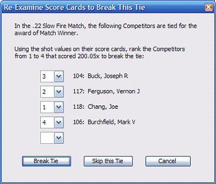

WHAT'S
NEW IN GENERATION 2 OF TOURNAMENT
Over 10 months of
research and 1100 man-hours of
programming went into the development of
the second generation of Tournament.
With its improved, yet familiar user
interface, you will find dozens of new
features that further enhance its
flexibility and ease of operation. These
are just a few...
EQUIPMENT CLASSES ARE NOW
SUPPORTED
 In addition to
Competitor Classifications and
Categories, many disciplines also require
the consideration of Equipment Classes in
entries and award assignments.
Unfortunately, the first generation of
Tournament simply ignored them
entirely, making it difficult to produce
Award Schedules and Bulletins that would
comply with a customary Match Program for
those disciplines. Now, Equipment Classes
are fully integrated, making Tournament
100%
compatible with such disciplines as
Highpower Rifle, Action Pistol and
Silhouette Rifle and Pistol, and others.
From the Downloads area of this website
you will find Sample Configuration Files
that clearly demonstrate how to integrate
Equipment Classes with the other Class
and Category systems available. In addition to
Competitor Classifications and
Categories, many disciplines also require
the consideration of Equipment Classes in
entries and award assignments.
Unfortunately, the first generation of
Tournament simply ignored them
entirely, making it difficult to produce
Award Schedules and Bulletins that would
comply with a customary Match Program for
those disciplines. Now, Equipment Classes
are fully integrated, making Tournament
100%
compatible with such disciplines as
Highpower Rifle, Action Pistol and
Silhouette Rifle and Pistol, and others.
From the Downloads area of this website
you will find Sample Configuration Files
that clearly demonstrate how to integrate
Equipment Classes with the other Class
and Category systems available.
NEW TIE-BREAKING SYSTEM
 The code and
interfaces for tie-breaking have been
completely redesigned. Operating entirely
behind-the-scenes, the algorithm for
automatically breaking ties in Aggregate
Matches has been enhanced for accuracy.
However, the BIG news is the new process
for tie-breaking in Fired Matches! Much
like its predecessor, the
process scans the entire competition for
unbroken ties. However, now when it finds
one, it will prompt for you to order ALL
of the tied competitors from first to
last (instead of just asking to
select the first). This change
improves the speed and accuracy of the
tie-breaking process and makes it
unnecessary to run the operation more
than once.
In addition to Open and Class/Category
awards, the process now searches for ties
in Special Category Awards as well.
ADDITIONAL SPECIAL
CATEGORY AWARDS
New categories have been
added for Special Awards: in addition to
the Senior, Junior and Woman
categories, you may now assign
awards for High Civilian, Service, Police
and even Equipment Class. These awards
will appear not only on the Match
Bulletins, but also will be assigned to
the awards schedule.
AGGREGATE MATCH TOTALING
& ADDITION CHECKING
 Of the hundreds of
Tournament users that took the time to
send feedback emails, almost 100
suggested the same thing: "It
would be nice to display the aggregate
match total as I type in the fired match
scores." By making the user
interface a little more interactive,
their wishes have come true in Generation
Two. Of the hundreds of
Tournament users that took the time to
send feedback emails, almost 100
suggested the same thing: "It
would be nice to display the aggregate
match total as I type in the fired match
scores." By making the user
interface a little more interactive,
their wishes have come true in Generation
Two.
Clearly visible in the Status Bar at the
bottom of the screen, an Aggregate Match
total is displayed whenever the LAST of a
fired match within that aggregate is
typed in. A glance at the written
scorecard and then down to the status bar
will check the scorer's addition and
accuracy of data entry.
BONUS PRIZES WITH LEWIS
CLASS CALCULATION
 In Sporting Clays and
Silhouette competitons, it is quite
popular to offer special Bonus Prizes
based on competitors' Grand Aggregate
scores, but randomly divided into groups
or flights. The standardized
system of drawing up these groups is
called the Lewis Class System which has
strict rules on how classes are to be
separated and ties to be handled.
Unfortunately, the complexity of the
Lewis Class System usually resorts in
old-fashioned pencil and paper
calculations. Tournament comes to the
rescue. In Sporting Clays and
Silhouette competitons, it is quite
popular to offer special Bonus Prizes
based on competitors' Grand Aggregate
scores, but randomly divided into groups
or flights. The standardized
system of drawing up these groups is
called the Lewis Class System which has
strict rules on how classes are to be
separated and ties to be handled.
Unfortunately, the complexity of the
Lewis Class System usually resorts in
old-fashioned pencil and paper
calculations. Tournament comes to the
rescue.
The Second Generation of Tournament
offers a Bonus Prize Match with Lewis
Class calculation. This Bonus Prize match
is handled in a way that allows it to be
merely optional, with the bonus purse
divided among only those who had paid the
extra fees to participate in it.
NEW INTERACTIVE HELP
DOCUMENTATION
With the new Interactive
Help, both new and advanced users will
find the information on whatever topics
they are seeking more quickly and easily.
A new table of contents and automatic
keyword search is in a frame affixed to
the left side of the help screen. In the
main help frame to the right, you will
find a completely rewritten tutorial,
with interactive program screenshots and
text. Much new information has been added
as well, including more detailed
operating instructions and
life-simplifying tips.
While Tournament is already
user-friendly, the improved Interactive
Help will make the learning curve of
getting effective results from an
unfamiliar application even shorter for
new users. And more advanced users will
be able to tap into the true power of
Tournament more thoroughly.
AUTOMATIC ARCHIVE UPDATING
A new function allows
Tournament users to effectively
"kill two birds with one
stone."
Exactly like in Generation One,
entering new competitors to your
tournament is lightening fast by allowing
you to retrieve folks' data from the Past
Competitor Archive. In addition, once
that retrieved data is automatically
pasted into fields of the competitor
entry form, you can make changes to that
data - such as a Classification upgrade
or an Address change. However, a
limitation of Generation One was
that those changes would not be written
back to the archive. NOW THEY ARE. If you
change any field after you retreive a
record from the archive, that original
archive record is updated automatically.
MAILING AND SCORECARD
LABELS REFORMATTED
Satisfying the requests
of a few users, the FONT SIZE on the
labels has been enlarged. No longer will
folks need a magnifying glass to read the
information printed on them. Regardless,
the label size itself has not changed,
and the basic Avery #8161 or #5261 format
is still the choice, not the 3-wide label
some folks prefer.
BACKWARDS COMPATIBILITY
Rest assured that all of
your configuration files from versions
1.5 and earlier will be compatible with
the Second Generation of Tournament.
You can load an old configuration file,
adjust the settings that are new to
Tournament 2, and re-save the new file
configuration file under the same or a
different filename.
|